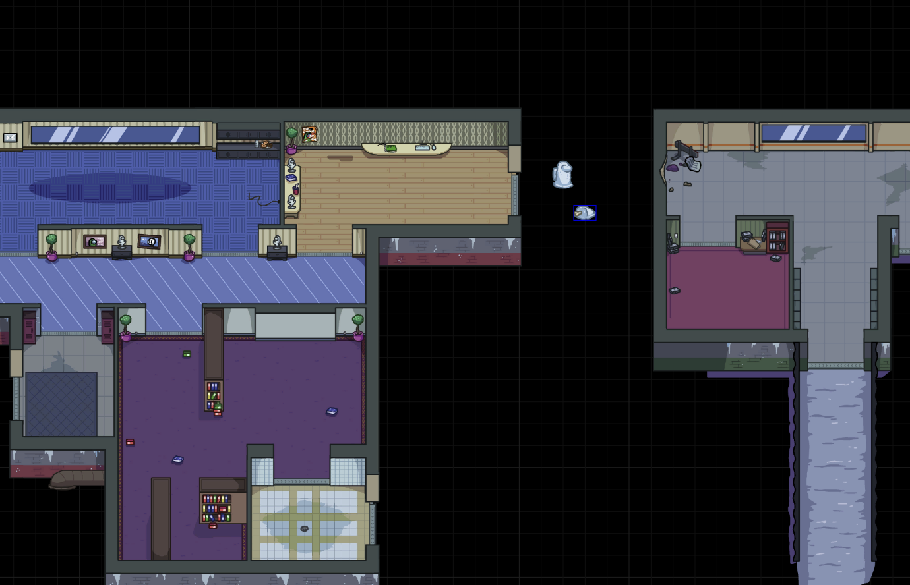
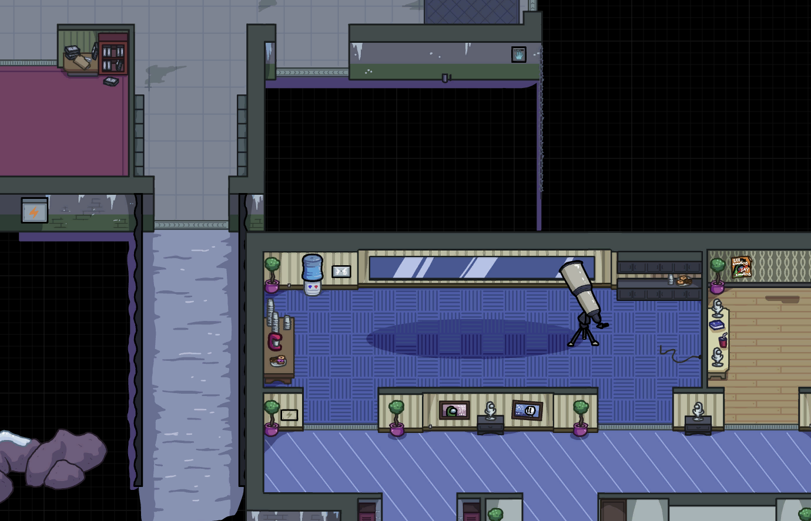

About
Level Imposter is the world's first custom Among Us map maker. It modifys the Among Us files in order to store custom assets, rooms, tasks, and sabatages. As fun as the original four maps are, we feel like giving the community the ability to create their own maps would make Among Us much more entertaining.
Installation
Windows:
- Close Among Us
- Download a Map file. Some are available here.
- Download and run LevelImposter.exe client
- Click "Browse" and select the Map.zip you downloaded.
- Hit "Apply"
- Open an Among Us lobby under Polus
- Ensure all players joining are using the same map
Mobile:
Mobile in not yet supported.